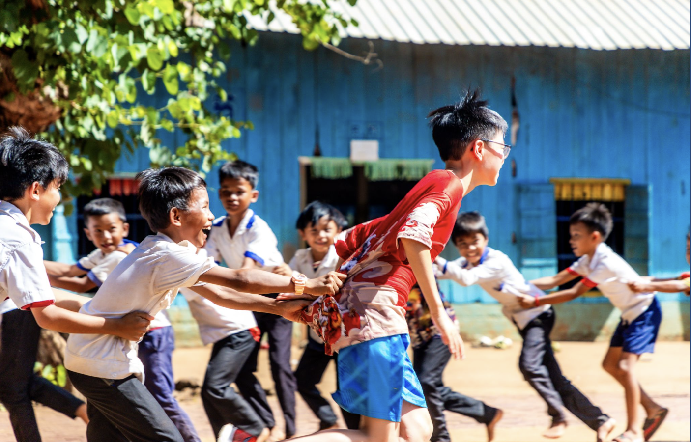
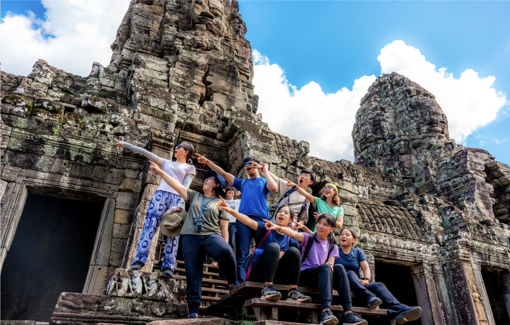
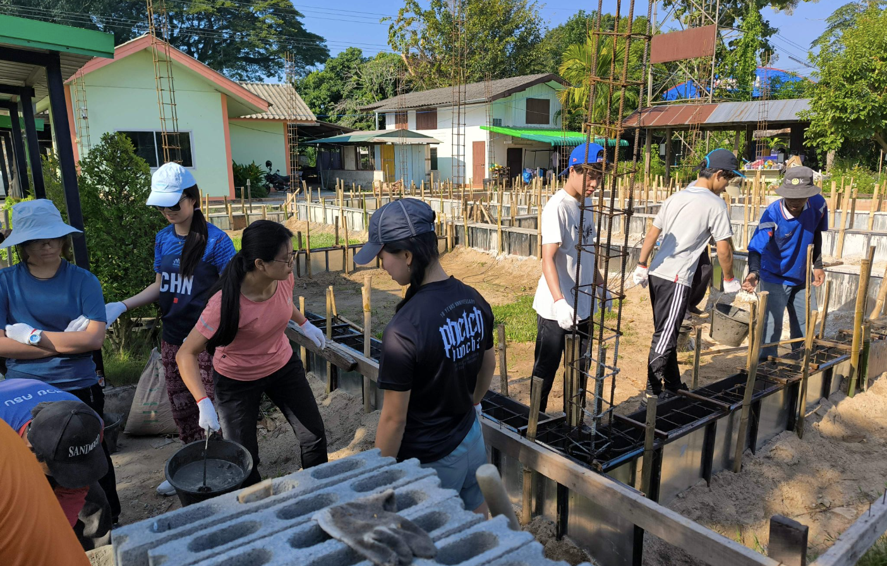
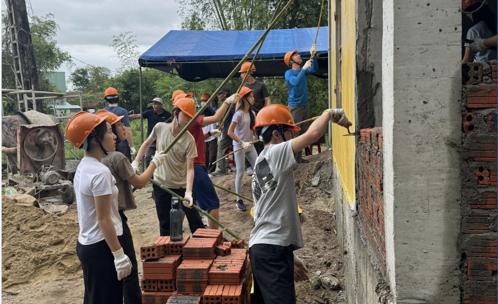
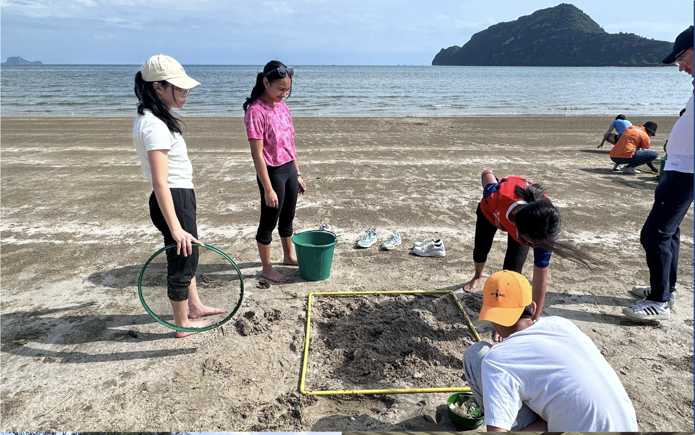

Details for the G10 & G11 Fall 2025 ELP trip.
The program aims to broaden students’ horizons by exposing them to unique experiences throughout the world. It emphasizes on experiential learning and gives students the opportunity to serve the communities they visit.
Program Dates: May 19-24, 2025 (6 days 5 nights)
Sample Itinerary
Day 1: Arrive in Baray, Choeung Ek Memorial, service learning & interview preparation
Day 2: Community interview, mind mapping lesson planning
Day 3: Community project, interaction with local students
Day 4: Local school lesson, Cambodian handicrafts
Day 5: Community project, farewell dinner
Day 6: Departure

Program Dates: 19 - 25 October 2025 (7 days 6 nights)
Sample Itinerary
Day 1: Arrive in Bangkok
Day 2: Transit to Siem Reap, orientation, group work
Day 3: Community project
Day 4: Community project and activities with local villagers
Day 5: Community project and circus workshop
Day 6: Temple visit
Day 7: Transit in Bangkok, return to Hong Kong

Program Dates: 19 - 24 October 2025 (6 days 5 nights)
Sample Itinerary
Day 1: Arrive in Bangkok
Day 1: Arrive in Chiang Mai, orientation
Day 2: Village hike, sustainable development group discussions
Day 3: Community project, interaction with local students
Day 4: Community project, team building activities
Day 5: Community project, village visit
Day 6: Departure

Program Dates: 19 - 24 October 2025 (6 days 5 nights)
Sample Itinerary
Day 1: Arrive in Hoi An, old city exploration
Day 2: Visit local villagers, agriculture activity and traditional cooking
Day 3: Community project
Day 4: Community project, cultural activities
Day 5: Interaction with local students, cultural performance
Day 6: Departure

Fire House
Program Dates: 19 - 24 October (6 days 5 nights)
Sample Itinerary
Day 1: Arrive in Hoi An, old city exploration.
Day 2: Visit local villagers, participate in agriculture activities, and learn traditional cooking techniques.
Day 3: Engage in a community project.
Day 4: Continue community project work and participate in cultural activities.
Day 5: Interact with local students and enjoy a cultural performance.
Day 6: Depart from Hoi An.
